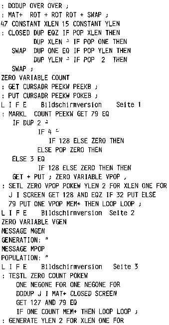

Nascom Journal |
Dezember 1981 · Ausgabe 11/12 |
2 bis 15 als Spielfeld. Zeile 1 dient als Kommandozeile. Zunächst wird der Bildschirm mit der gewünschten Zellkonfiguration beschrieben (Zelle = 0). Dann kehrt man in Zeile 1 zurück und startet das Programm mit „(Anzahl) Generations“. Das Programm läuft sehr langsam. Das könnte man ändern, wenn man die innere Schleife in Maschinencode programmieren würde. Es wird kein Zwischenspeicher benötigt, doch wer Bit 7 für die Grafik verwendet, der könnte einige Ueberraschungen erleben – vielleicht sieht das sogar ganz lustig aus!
Die Regeln des „Spiels“ hat Peter Bentz im Nascom-Journal 1/80 beschrieben. Wem diese Version hier zu langsam ist, dem sei die dort abgedruckte Maschinencodeversion empfohlen.
L I F E Bildschirmversion Seite 4
Immer häufiger wird der Wunsch an uns herangetragen, uns doch nicht in fernen Sphären der Programmierkunst zu verlieren, sondern auch an die Einsteiger zu denken, die sich zunächst mit den Grundbegriffen der Maschinensprache vertraut machen wollen. Die Fortgeschrittenen dürfen hier einmal ruhig weiterblättern. (Oder hätte nicht vielleicht jemand Lust, auch einen Teil dieser Serie zu schreiben? Wir wären für jeden Beitrag dankbar).
Dies soll keine Konkurrenz zu den vielen Z80 Büchern, die bereits auf dem Markt sind, sein. Hier soll in einer Serie von einfachen Programmierbeispielen der Befehlssatz des Z80 aufgezeigt und praktisch erprobt werden. Was systemeigene Adressen angeht, beziehen wir uns selbstverständlich immer auf Nascom 1 und 2.
Zunächst zum Aufbau der Serie. Der Übersichtlichkeit wegen sollen die einzelnen Kapitel nach den Befehlsblöcken im Z80 Handbuch gegliedert werden. (Das erste Kapitel würde also die 8Bit Ladebefehle betreffen). Als Grundlage muß aber das Rechnen im Binär- und Hexadezimalsystem vorausgesetzt werden. Der Vollständigkeit halber also zunächst einmal ein kurzer Abriß dieser Rechensysteme.
Bekanntlich rechnen wir im Dezimalsystem (Zehnersystem), d.h. beim Zählen wechseln wir nach neun Zählschritten in die nächste Stelle. 08 bedeutet also 8 Einerschritte; 10 bedeutet: es ist durch neun Zählschritte die erste Stelle bereits voll besetzt worden, wir mußten also auf die nächste ausweichen und sie mit 1 belegen. Der Zählvorgang könnte auf der ersten Stelle nun fortgesetzt werden, bis wir wiederum die zweite belegen müssen.
| Seite 6 von 55 |
|---|